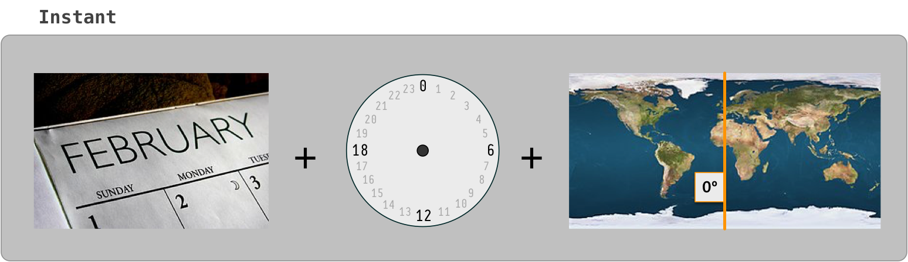
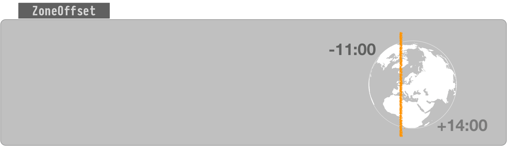
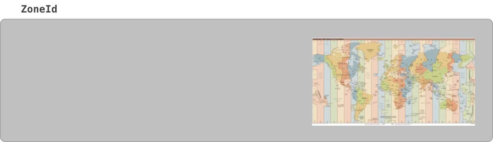
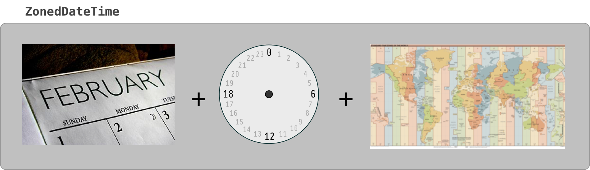
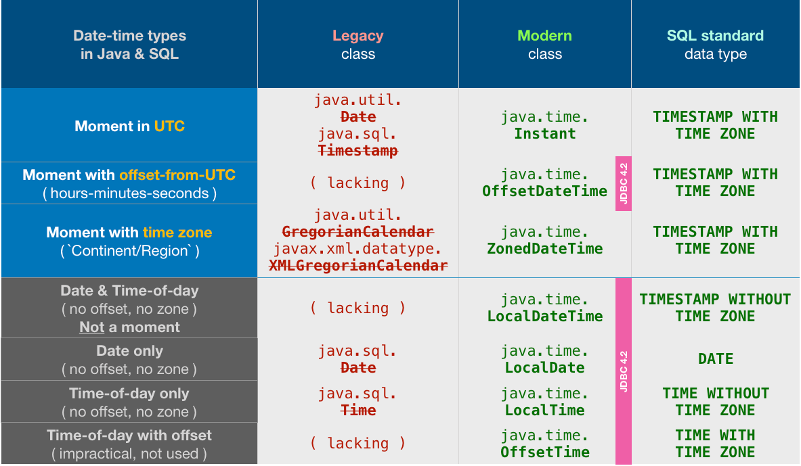

What's the difference between Instant and LocalDateTime?
I know that:
- Instant is rather a "technical" timestamp representation (nanoseconds) for computing.
-
LocalDateTime is rather date/clock representation
including time-zonesfor humans.
Still in the end IMO both can be taken as types for most application use
cases. As an example: currently, I am running a batch job where I need to
calculate the next run based on dates and I am struggling to find pros/cons
between these two types (apart from the nanosecond precision advantage of
Instant and the time-zone part of LocalDateTime).
Can you name some application examples where only Instant or LocalDateTime
should be used?
Edit: Beware of misread documentations forLocalDateTime regarding precision
and time-zone.
Answer

tl;dr
Instant and LocalDateTime are two entirely different animals: One
represents a moment, the other does not.
-
Instantrepresents a moment, a specific point in the timeline. -
LocalDateTimerepresents a date and a time-of-day. But lacking a time zone or offset-from-UTC, this class cannot represent a moment. It represents potential moments along a range of about 26 to 27 hours, the range of all time zones around the globe. ALocalDateTimevalue is inherently ambiguous.
Incorrect Presumption
LocalDateTimeis rather date/clock representation including time-zones for humans.
Your statement is incorrect: ALocalDateTime has no time zone. Having
no time zone is the entire point of that class.
To quote that class’ doc:
This class does not store or represent a time-zone. Instead, it is a description of the date, as used for birthdays, combined with the local time as seen on a wall clock. It cannot represent an instant on the time-line without additional information such as an offset or time-zone.
So Local… means “not zoned, no offset”.
Instant

An Instant is a moment on the timeline in UTC, a count of nanoseconds since
the epoch of the first moment of 1970 UTC (basically, see class doc for nitty-
gritty details). Since most of your business logic, data storage, and data
exchange should be in UTC, this is a handy class to be used often.
Instant instant = Instant.now() ; // Capture the current moment in UTC.
OffsetDateTime
The class OffsetDateTime class represents a moment as a date and time with a
context of some number of hours-minutes-seconds ahead of, or behind, UTC. The
amount of offset, the number of hours-minutes-seconds, is represented by the
ZoneOffset class.
If the number of hours-minutes-seconds is zero, an OffsetDateTime represents
a moment in UTC the same as an Instant.
ZoneOffset

The ZoneOffset class represents an offset-from-UTC, a number of hours-
minutes-seconds ahead of UTC or behind UTC.
A ZoneOffset is merely a number of hours-minutes-seconds, nothing more. A
zone is much more, having a name and a history of changes to offset. So using
a zone is always preferable to using a mere offset.
ZoneId

A time zone is represented by the ZoneId class.
A new day dawns earlier in Paris than in Montréal, for example. So we need to move the clock’s hands to better reflect noon (when the Sun is directly overhead) for a given region. The further away eastward/westward from the UTC line in west Europe/Africa the larger the offset.
A time zone is a set of rules for handling adjustments and anomalies as practiced by a local community or region. The most common anomaly is the all- too-popular lunacy known as Daylight Saving Time (DST).
A time zone has the history of past rules, present rules, and rules confirmed for the near future.
These rules change more often than you might expect. Be sure to keep your date-time library's rules, usually a copy of the 'tz' database, up to date. Keeping up-to-date is easier than ever now in Java 8 with Oracle releasing a Timezone Updater Tool.
Specify a proper time zone name in the format of Continent/Region, such as
America/Montreal, Africa/Casablanca, or Pacific/Auckland. Never use the
2-4 letter abbreviation such as EST or IST as they are not true time
zones, not standardized, and not even unique(!).
Time Zone = Offset + Rules of Adjustments
ZoneId z = ZoneId.of( “Africa/Tunis” ) ;
ZonedDateTime

Think of ZonedDateTime conceptually as an Instant with an assigned
ZoneId.
ZonedDateTime = ( Instant + ZoneId )
To capture the current moment as seen in the wall-clock time used by the people of a particular region (a time zone):
ZonedDateTime zdt = ZonedDateTime.now( z ) ; // Pass a `ZoneId` object such as `ZoneId.of( "Europe/Paris" )`.
Nearly all of your backend, database, business logic, data persistence, data
exchange should all be in UTC. But for presentation to users you need to
adjust into a time zone expected by the user. This is the purpose of the
ZonedDateTime class and the formatter classes used to generate String
representations of those date-time values.
ZonedDateTime zdt = instant.atZone( z ) ; String output = zdt.toString() ; // Standard ISO 8601 format.
You can generate text in localized format using DateTimeFormatter.
DateTimeFormatter f = DateTimeFormatter.ofLocalizedDateTime( FormatStyle.FULL ).withLocale( Locale.CANADA_FRENCH ) ; String outputFormatted = zdt.format( f ) ;
mardi 30 avril 2019 à 23 h 22 min 55 s heure de l’Inde
LocalDate, LocalTime, LocalDateTime
The "local" date time classes, LocalDateTime, LocalDate, LocalTime, are
a different kind of critter. The are not tied to any one locality or time
zone. They are not tied to the timeline. They have no real meaning until
you apply them to a locality to find a point on the timeline.
The word “Local” in these class names may be counter-intuitive to the uninitiated. The word means any locality, or every locality, but not a particular locality.
So for business apps, the "Local" types are not often used as they represent
just the general idea of a possible date or time not a specific moment on the
timeline. Business apps tend to care about the exact moment an invoice
arrived, a product shipped for transport, an employee was hired, or the taxi
left the garage. So business app developers use Instant and ZonedDateTime
classes most commonly.
So when would we use LocalDateTime? In three situations:
- We want to apply a certain date and time-of-day across multiple locations.
- We are booking appointments.
- We have an intended yet undetermined time zone.
Notice that none of these three cases involve a single certain specific point on the timeline, none of these are a moment.
One time-of-day, multiple moments
Sometimes we want to represent a certain time-of-day on a certain date, but want to apply that into multiple localities across time zones.
For example, "Christmas starts at midnight on the 25th of December 2015" is a
LocalDateTime. Midnight strikes at different moments in Paris than in
Montréal, and different again in Seattle and in Auckland.
LocalDate ld = LocalDate.of( 2018 , Month.DECEMBER , 25 ) ; LocalTime lt = LocalTime.MIN ; // 00:00:00 LocalDateTime ldt = LocalDateTime.of( ld , lt ) ; // Christmas morning anywhere.
Another example, "Acme Company has a policy that lunchtime starts at 12:30 PM
at each of its factories worldwide" is a LocalTime. To have real meaning you
need to apply it to the timeline to figure the moment of 12:30 at the
Stuttgart factory or 12:30 at the Rabat factory or 12:30 at the Sydney
factory.
Booking appointments
Another situation to use LocalDateTime is for booking future events (ex:
Dentist appointments). These appointments may be far enough out in the future
that you risk politicians redefining the time zone. Politicians often give
little forewarning, or even no warning at all. If you mean "3 PM next January
23rd" regardless of how the politicians may play with the clock, then you
cannot record a moment – that would see 3 PM turn into 2 PM or 4 PM if that
region adopted or dropped Daylight Saving Time, for example.
For appointments, store a LocalDateTime and a ZoneId, kept separately.
Later, when generating a schedule, on-the-fly determine a moment by calling
LocalDateTime::atZone( ZoneId ) to generate a ZonedDateTime object.
ZonedDateTime zdt = ldt.atZone( z ) ; // Given a date, a time-of-day, and a time zone, determine a moment, a point on the timeline.
If needed, you can adjust to UTC. Extract an Instant from the
ZonedDateTime.
Instant instant = zdt.toInstant() ; // Adjust from some zone to UTC. Same moment, same point on the timeline, different wall-clock time.
Unknown zone
Some people might use LocalDateTime in a situation where the time zone or
offset is unknown.
I consider this case inappropriate and unwise. If a zone or offset is intended but undetermined, you have bad data. That would be like storing a price of a product without knowing the intended currency (dollars, pounds, euros, etc.). Not a good idea.
All date-time types
For completeness, here is a table of all the possible date-time types, both
modern and legacy in Java, as well as those defined by the SQL standard. This
might help to place the Instant & LocalDateTime classes in a larger
context.

Notice the odd choices made by the Java team in designing JDBC 4.2. They chose
to support all the java.time times… except for the two most commonly used
classes: Instant & ZonedDateTime.
But not to worry. We can easily convert back and forth.
Converting Instant.
// Storing OffsetDateTime odt = instant.atOffset( ZoneOffset.UTC ) ; myPreparedStatement.setObject( … , odt ) ; // Retrieving OffsetDateTime odt = myResultSet.getObject( … , OffsetDateTime.class ) ; Instant instant = odt.toInstant() ;
Converting ZonedDateTime.
// Storing OffsetDateTime odt = zdt.toOffsetDateTime() ; myPreparedStatement.setObject( … , odt ) ; // Retrieving OffsetDateTime odt = myResultSet.getObject( … , OffsetDateTime.class ) ; ZoneId z = ZoneId.of( "Asia/Kolkata" ) ; ZonedDateTime zdt = odt.atZone( z ) ;
About java.time
The java.time framework is built into Java 8 and later. These classes
supplant the troublesome old legacy date-time classes such as
java.util.Date, Calendar, & SimpleDateFormat.
To learn more, see the Oracle Tutorial. And search Stack Overflow for many examples and explanations. Specification is JSR 310.
The Joda-Time project, now in maintenance mode, advises migration to the java.time classes.
You may exchange java.time objects directly with your database. Use a JDBC
driver compliant with JDBC 4.2 or later. No need for strings, no need for
java.sql.* classes. Hibernate 5 & JPA 2.2 support java.time.
Where to obtain the java.time classes?
-
Java SE 8 , Java SE 9 , Java SE 10 , Java SE 11 , and later - Part of the standard Java API with a bundled implementation.
- Java 9 brought some minor features and fixes.
-
Java SE 6 and Java SE 7
- Most of the java.time functionality is back-ported to Java 6 & 7 in ThreeTen-Backport.
-
Android
- Later versions of Android (26+) bundle implementations of the java.time classes.
- For earlier Android (<26), a process known as API desugaring brings a subset of the java.time functionality not originally built into Android.
- If the desugaring does not offer what you need, the ThreeTenABP project adapts ThreeTen-Backport (mentioned above) to Android. See How to use ThreeTenABP….

The ThreeTen-Extra project extends java.time with additional classes. This
project is a proving ground for possible future additions to java.time. You
may find some useful classes here such as Interval, YearWeek,
YearQuarter, and more.
Suggest
One main difference is the "Local" part of LocalDateTime. If you live in
Germany and create a LocalDateTime instance and someone else lives in the
USA and creates another instance at the very same moment (provided the clocks
are properly set) - the value of those objects would actually be different.
This does not apply to Instant, which is calculated independently from a
time zone.
LocalDateTime stores date and time without a timezone, but its initial value
is timezone-dependent. Instant's is not.
Moreover, LocalDateTime provides methods for manipulating date components
like days, hours, and months. An Instant does not.
apart from the nanosecond precision advantage of
Instantand the time-zone part ofLocalDateTime
Both classes have the same precision. LocalDateTime does not store the
timezone. Read Javadocs thoroughly, because you may make a big mistake with
such invalid assumptions: Instant and LocalDateTime.